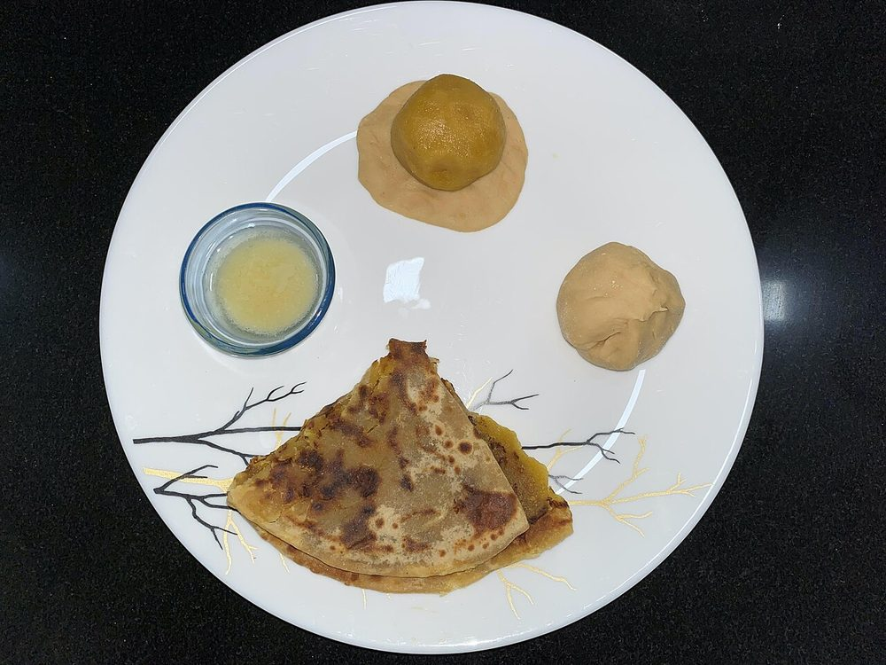

Puran Poli
a soft flatbread stuffed with sweet chana dal and jaggery, scented with cardamom and nutmeg

Contains: milk, gluten
Ingredients
Quantities for 6.
- 200g (1 cup) Chana Dal
- 200g, grated Jaggeryuse the dark, soft variety
- 1/2 tsp, ground Cardamom
- 1/4 tsp, freshly grated Nutmeg
- 125g Atta
- 60g Maidakeeps the covering stretchy enough to hold the puran
- 1/4 tsp Turmericfor the colour of the doughoptional
- 6 tbsp Ghee2 in the dough, the rest for cooking and serving
- 3 tbsp Rice Flourfor dusting
- about 100ml for the dough, 500ml for the dal Water
- 1/4 tsp Salt
Cookware
stovetop, tawa, pressure cooker
Checked against the ingredient list for ten allergens: milk, egg, fish, crustaceans, tree nuts, peanuts, sesame, mustard, soy and gluten. Brands vary, so read the label on anything new to you.
Before you start
- Make the dough first and rest it at least 1 hour, covered, under a film of ghee. A slack, well-rested dough is the whole trick.
- Rinse and soak the chana dal 2 hours before cooking so it cooks evenly and does not need extra water at the end.
- Have a colander ready to drain the cooked dal thoroughly. Wet puran will never hold inside the poli.
Method
- Knead the atta, maida, turmeric, salt, 2 tbsp ghee and enough water into a very soft, sticky dough, working it for 8 minutes until it stretches without tearing.It should be softer than chapati dough, almost too soft to handle. That is correct.
- Coat the dough with a spoon of ghee, cover and rest at least 1 hour.
- Pressure cook the soaked chana dal with 500ml water for 4 whistles until soft but not disintegrating, then drain it thoroughly in a colander for 10 minutes.Keep the drained cooking water. Thinned with spices it becomes katachi amti, which is served alongside.
- Mash or pass the drained dal through a sieve until completely smooth.
- Cook the mashed dal with the jaggery in a heavy pan over medium heat for 12 to 15 minutes, stirring constantly, until the mixture pulls away from the sides and holds a line when you drag a spoon through it.Jaggery loosens the mix before it tightens. Do not panic and do not stop stirring, or it catches.
- Stir in the cardamom and nutmeg and let the puran cool completely. It should be firm enough to roll into balls.
- Divide both dough and puran into 8 portions each, with the puran balls slightly larger than the dough balls.
- Flatten a dough ball in your palm, sit a puran ball in the middle, gather the edges over the top and pinch them shut, then flatten gently.
- Dust with rice flour and roll out very gently to about 18cm, turning often and using almost no pressure.If the filling breaks through, patch it with a scrap of dough and carry on rolling from the centre outwards.
- Cook on a medium-hot tawa for about 1 minute a side until pale brown spots appear, smearing each side with ghee as you turn it.
- Serve warm with a spoon of ghee poured over, and katachi amti alongside.
Storage
Keeps 3 days at room temperature in an airtight box, or 1 week refrigerated. Warm on a dry tawa for 30 seconds a side before serving; never microwave, it turns rubbery.
Nutrition Good estimate
Medium protein: 10 g a serving, 8% of the calories
| Per serving135 g | Per 100 g | |
|---|---|---|
| Calories | 502 kcal | 372 kcal |
| Protein | 10.4 g | 8 g |
| Carbohydrate | 83.9 g | 62 g |
| of which sugars | 37.1 g | 27 g |
| Fibre | 7.4 g | 6 g |
| Fat | 15.4 g | 11 g |
| of which saturated | 8.3 g | 6 g |
| of which unsaturated | 5.9 g | 4 g |
Nearest database match used for jaggery. Estimated from raw ingredients using USDA FoodData Central.
More like this: Vegetarian Indian recipes · No onion no garlic recipes · Maharashtrian recipes
Times, yields, allergens and nutrition are guidance. Use your own judgement on doneness and on storing. More in About.